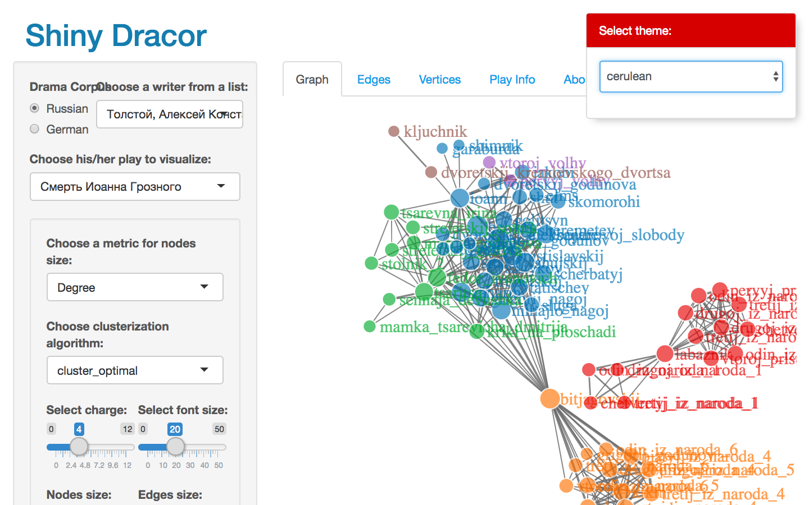
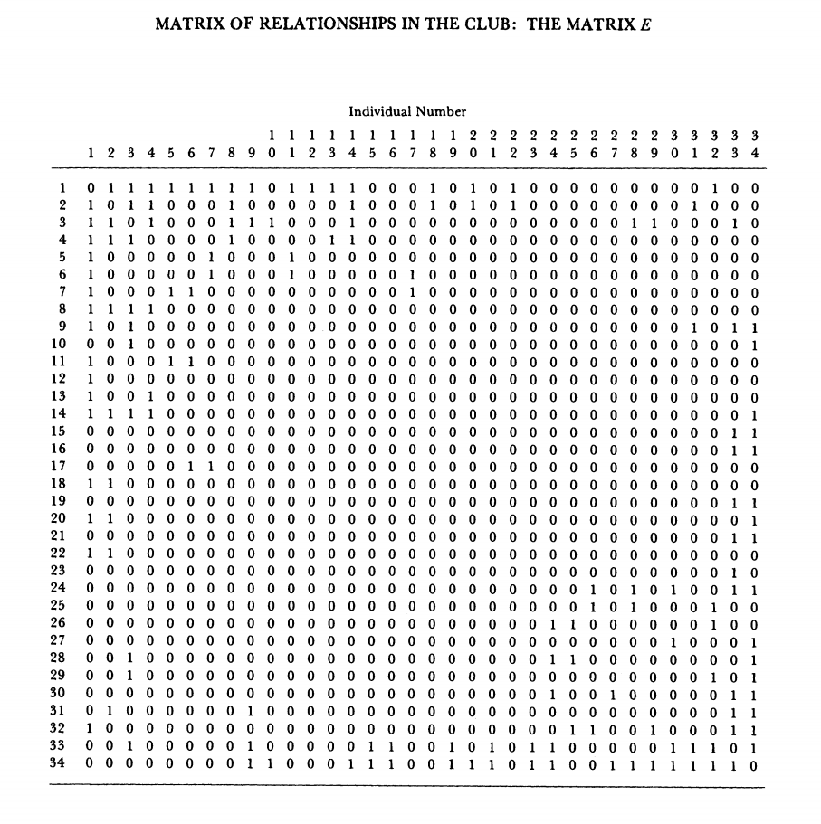
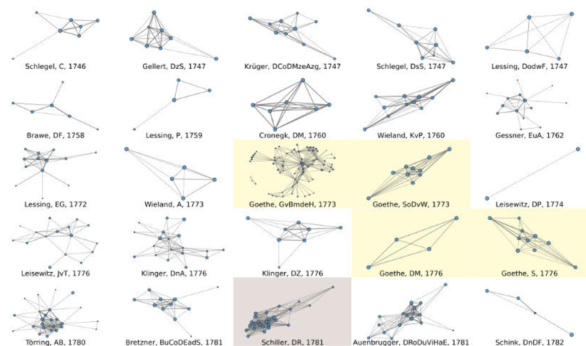
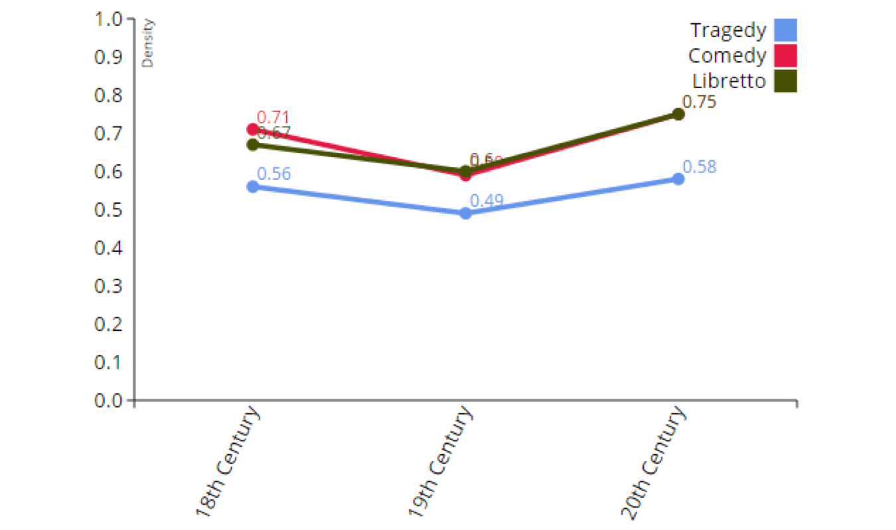
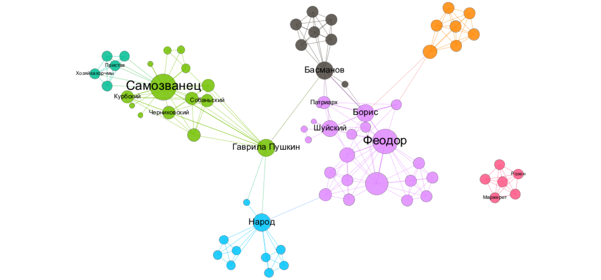

not only linguistic networks
...или "сетевой анализ и тексты"
Кто я такой
- Меня зовут Даня
- Я из Вышки: hse.ru/staff/skorinkin
- журналист (бак)
- комплингвист (маг)
- программирующий гуманитарий с филологическим уклоном
И я приехал отвлекать вас от лингвистики üò±- На самом деле лингвистика будет!
Каминг аут!
Я никогда не изучал R и умею там три с половиной команды
Да и вообще анализом данных не слишком много занимался
Что сегодня будет
- Что за сети? Небольшое введение (не пинайте меня, если я буду повторять Кускову!)
- Те самые «шесть рукопожатий»: немножко про сети в реальном мире
- С кем дружил Бэкон и кому платили короли: сети в гуманитарных науках
- Плотные комедии и Пушкин на посылках: что можно увидеть в литературных сетях?
- Практика 1
- Сети в лингвистике: обзор приложений
- Практика 2
Что за сети?
Сеть (граф)

Что можно представить в виде сети?
Да все что угодно

Мосты

Задача о мостах Кёнигсберга
Транспортные сети
Направленный граф

А вот еще один транспортный граф (сеть)

Взвешенные графы

Wikipedia

Кстати
Графовые данные из Википедии можно вытаскивать через Wikidata с помощью SPARQL
Интернет — по определению сеть

...и конечно, социальные сети

Попробуем живьем!
Но вообще-то это настоящая наука
Анализ социальных сетей
Начало в 1930-е: Курт Левин, Джейкоб (Якоб) Морено


обновленная версия на сайте Мартина Гражана (Martin Grandjean)
Анализ социальных сетей
Манчестерская школа антропологии (Макс Глакман и другие) в 1950-е

Анализ социальных сетей
Гарвардский прорыв ('Harvard Breakthrough') в 1960-е (Харрисон Уайт и другие)

Те самые шесть рукопожатий

Small World Experiment

Small World Experiment

Чем small world граф формально отличается от остальных?
1 критерий: коэффициент кластеризации значительно выше, чем в сопоставимом по размеру случайном графе
Чем small world граф формально отличается от остальных?
2 критерий: средняя длина пути (Average path length) совпадает с таковой у случайного графа
Сетевой анализ в гуманитарных науках
Кто кого знал в Британии 500 лет назад?
- Проект Six Degrees of Francis Bacon (шесть рукопожатий Фрэнсиса Бэкона)
- Более 13.000 человек, более 200.000 связей
- Извлечено из Oxford Dictionary of National Biography
- sixdegreesoffrancisbacon.com
People of Medieval Scotland

RusDraCor

(Shiny RusDraCor)
Почему же все, даже совсем гуманитарии, любят сеточки?
It’s pretty (and fashionable)
Ondrej Tichy, Charles University
Наглядность + формальная строгость (#WinningCombo!)
Это называется степень узла
Степень A = 5
А здесь что можно сказать?
Это называется betweenness centrality (центральность по посредничеству)
Живой пример
Closeness centrality (центральность по близости)
1/сумма расстояний от узла до остальных

Сетевой анализ позволяет
- Вычислять значимость отдельных узлов по разным критериям центральность
- Анализировать пути, например:
- распространения информации
- передачи болезней
- транспортировки ресурсов
- А еще — извлекать сообщества
Извлечение сообществ: Karate Club (вернемся к соц.наукам)

Извлечение сообществ: Karate Club
Извлечение сообществ: Karate Club
Извлечение сообществ: Karate Club
The process leading to fission is viewed as an unequal flow of sentiments and information across the ties in a social network. This flow is unequal because it is uniquely constrained by the contextual range and sensitivity of each relationship in the network. The subsequent differential sharing of sentiments leads to the formation of subgroups with more internal stability than the group as a whole, and results in fission
Матрица (таблица) связей
Сеть связей

Попробуем сами?

Кстати, данные!
В Data/Networks
Gephi!
- Десктопная прога для работы с графами
- Like Photoshop for graphs (gephi.org)
- Много фич для анализа и визуализации
- Написана на Java - работает под всеми ОС
- Но таки глючная:)
Гефи или жефи?
Karate Club Club
Сети в вымышленных мирах
...не ограничиваются литературой!

CSV — cамый простой формат кодирования сетей
- Source,Target,Weight
- Даня,Маша,2
- Вася,Петя,15
- Вася,Маша,1
Как можно делать такие CSV?
- В блокноте...
- В любом табличном редакторе (LibreOffice/OpenOffice/Excel)
- Из питона. Например: github.com/DanilSko/lyc_compling/blob/master/Networks_24052018/Text2NetworkSample_Lyceum2405.ipynb
- Ручками в нашем Ezlinavis
Предыстория
Donald Knuth. Stanford GraphBase (1994)

Предыстория
Schweizer T., Schnegg M. Die soziale Struktur der. „Simple Storys“: Eine Netzwerkanalyse. (1998)

Что показал сетевой анализ вселенной Marvel?
Что вселенная Marvel вращается вокруг Капитана Америки
Но это же банально!
А еще, возможно, вскрыло стратегию продвижения супергероев

Гордость и предубеждение, Алиса и кролик, Ромео и Джульетта…
- James Stiller, Daniel Nettle, and Robin I. M. Dunbar (2003) The Small World of Shakespeare’s Plays.Human Nature 14(4):397---408.
- “Weak Links and Scene Cliques Within the Small World of Shakespeare,” Journal of Cultural and Evolutionary Psychology 3, no. 1 (2005)
- Elson, D. K., Dames, N. and McKeown, K. (2010), Extracting Social Networks from Literary Fiction, Proceedings of ACL 2010, Uppsala, Sweden.
- J. Rydberg-Cox. Social Networks and the Language of Greek Tragedy. Journal of the Chicago Colloquium on Digital Humanities and Computer Science, 1(3):11, 2011.
- Agarwal A., Corvalan A., Jensen J., Rambow O. (2012), Social network analysis of Alice in Wonderland. Proceedings of the NAACL HLT 2012 Workshop on Computational Linguistics for Literature, pages 88–96, Montreal, Canada.
Алиса в стране чудес

«Переоткрытие» сетевого анализа в художественном тексте

Франко Моретти, «Теория сетей и анализ сюжета» (2011/2009)
Масштабирование

тут даже глазами можно что-то ухватывать
сеточки хороши для визуального анализа

тут даже глазами можно что-то ухватывать
А можно смотреть динамику формальных метрик сети
Например, плотность

Плотности комедии и трагедии отличаются
Таких исследований все больше
Analyzing Social Networks Of XML Plays: Exploring Shakespeare’s GenresА теперь — к русскому материалу!

Практика 1
- "Анна Каренина" и "Война и мир" в Gephi
- 100 русских пьес в R/igraph
Классицизм против романтизма
(rus.dracor.org)


Сети для изучения иерархии персонажей
Важный ли герой Гаврила Пушкин?
Пушкин на посылках и betweenness centrality